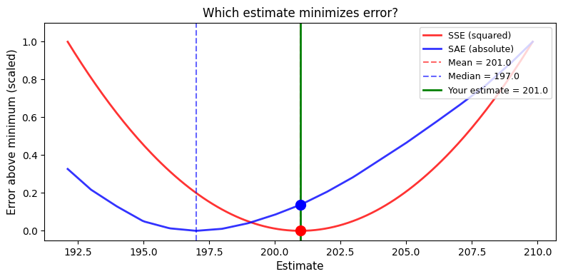
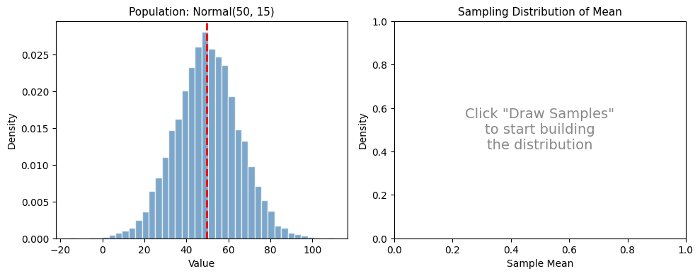
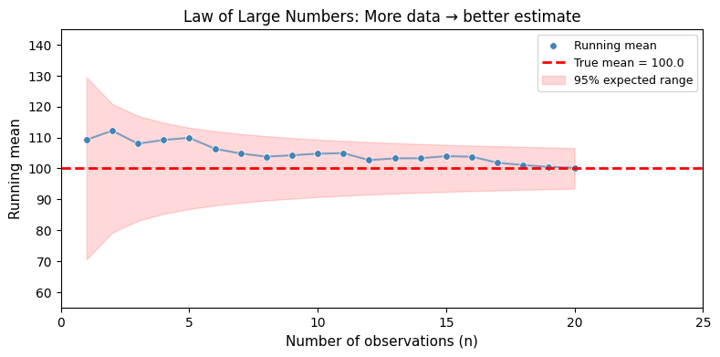
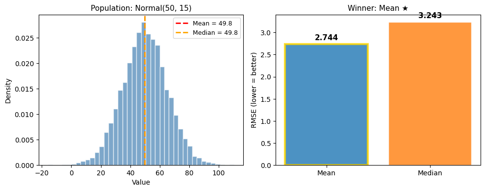
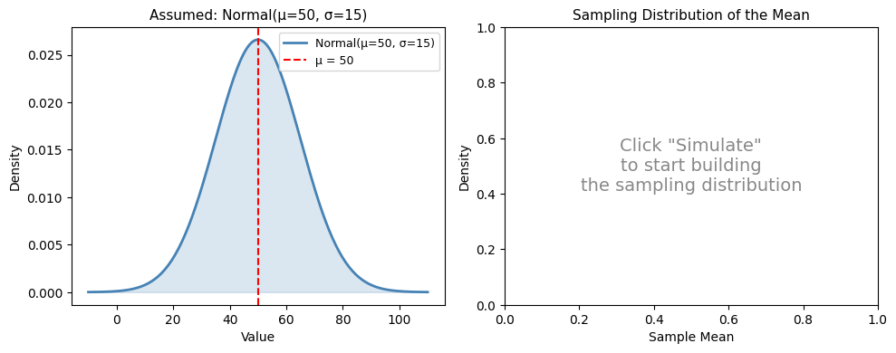
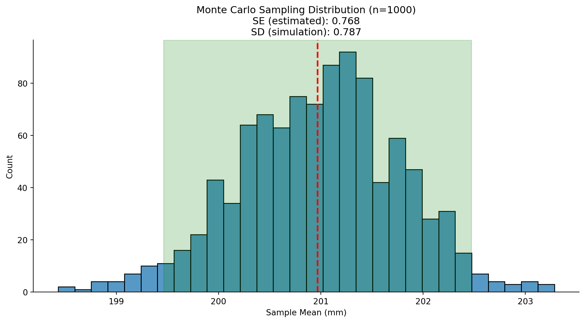
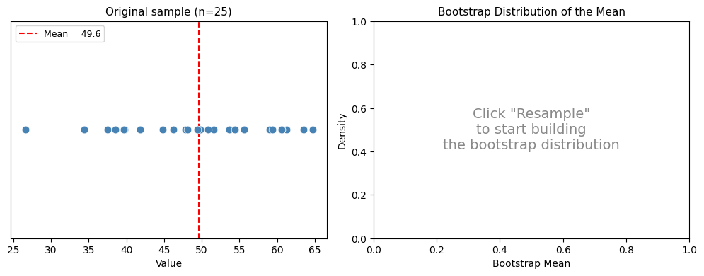
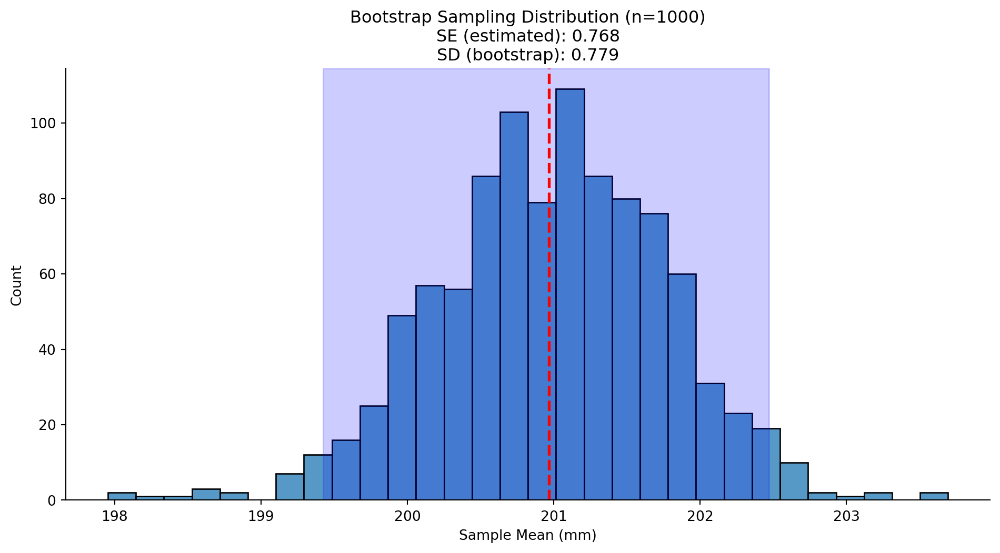
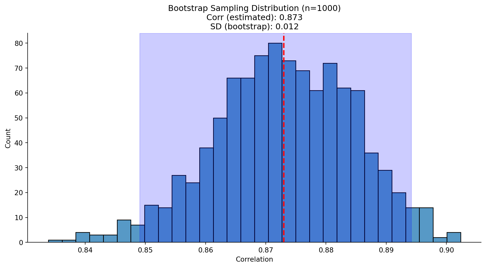

Code
import polars as pl
import seaborn as sns
import numpy as npimport polars as pl
import seaborn as sns
import numpy as npDuring the live course this notebook was a reactive marimo notebook with interactive “explorable” widgets. On this page those explorables are shown as static snapshots at their default settings — the surrounding text may still refer to dragging sliders or clicking buttons. To interact with them, run the original marimo notebook from your lab assignment repo.
In this notebook, we’ll explore one of the most important concepts in statistics: the sampling distribution. Understanding sampling distributions is key to understanding where uncertainty comes from and how we can quantify it.
We’ll learn two powerful computational approaches:
Then we’ll combine them in a power analysis to answer: “How many observations do we need to reliably detect an effect?”
By the end of this notebook, you’ll understand why Jake VanderPlas says: “If you can write a for-loop, you can do statistics.”
This notebook includes interactive widgets you can play with to build intuitions before writing any code. Drag sliders, change parameters, and watch what happens!
Before we can simulate or resample, we need to fit estimators to our data. Remember from this week’s lectures:
Different estimators make different assumptions about what “error” means — and these assumptions are captured in their loss functions.
Each estimator minimizes a specific loss function:
\[\text{SSE} = \sum_{i=1}^{n} (x_i - \hat\theta)^2 \qquad \text{SAE} = \sum_{i=1}^{n} |x_i - \hat\theta|\]
The mean minimizes SSE; the median minimizes SAE. Drag the slider below to verify this yourself:
Static snapshot — interactive in the original marimo lab:

| SSE | SAE | |
| Your estimate (201.0) | 65,219 | 4,052 |
| At mean (201.0) | 65,219 ✓ | 4,052 |
| At median (197.0) | 70,459 | 3,937 ✓ |
Notice how:
This isn’t coincidence — it’s mathematical necessity. The estimator we choose reflects our assumptions about what kind of errors matter most:
The CLT says: regardless of the population’s shape, the sampling distribution of an estimator becomes approximately normal as sample size grows.
Try it yourself — pick a non-normal distribution (e.g., Exponential or Bimodal), then click Draw Samples to watch the sampling distribution emerge:
Static snapshot — interactive in the original marimo lab:

Try different combinations and click Draw Samples repeatedly to build up the distribution:
The LLN says: as we increase the number of independent observations, a sample estimator converges to the theoretical population estimator
The widget below uses synthetic heavy-tailed data (t-distribution, df=3) — perfect for seeing wild early fluctuations that eventually settle down. Drag the slider to see this in action:
Static snapshot — interactive in the original marimo lab:

Notice how the running average (blue line) bounces wildly at small sample sizes but settles down as n grows. The red band shows the expected range based on σ/√n — the theoretical standard error. This is why larger samples give more precise estimates.
We’ve seen that the mean minimizes SSE and the median minimizes SAE. But which estimator is better?
The No Free Lunch principle says: it depends on the data. No single estimator is universally optimal. Switch between distributions below and watch the winner change:
Static snapshot — interactive in the original marimo lab:

Every estimator embodies assumptions defined by their loss-functions — and those assumptions can help or hurt depending on the data. There is no universally “best” estimator. This is why understanding your data matters!
Before we dive into code, let’s clarify three distributions that are easy to confuse:
| Distribution | What it is | What we know about it |
|---|---|---|
| Population | The true values in the world | Usually unknown (that’s why we do statistics!) |
| Sampling | How our estimates vary across hypothetical samples | The bridge between sample and population |
| Sample | The data we actually collected | We can see and measure this |
The sampling distribution is the key concept. It answers: “If I collected many datasets of the same size, how much would my estimate (mean, median, correlation, etc.) bounce around?”

The sampling distribution is the uncertainty bridge. It connects:
Standard errors, confidence intervals, and p-values all come from reasoning about the sampling distribution.
Let’s exploring the sampling distribution using 2 approaches we saw in “Statistics for Hackers”

Monte-Carlo simulation uses random sampling from assumed probability distributions to understand statistical behavior.
The concept of Monte-Carlo simulation was devised by the mathematicians Stan Ulam and Nicholas Metropolis, who were working to develop an atomic weapon for the US as part of the Manhattan Project. They needed to compute the average distance that a neutron would travel in a substance before it collided with an atomic nucleus, but they could not compute this using standard mathematics. Ulam realized that these computations could be simulated using random numbers, just like a casino game.
In a casino game such as a roulette wheel, numbers are generated at random; to estimate the probability of a specific outcome, one could play the game hundreds of times. Ulam’s uncle had gambled at the Monte-Carlo casino in Monaco, which is apparently where the name came from for this technique.
Monte-Carlo asks: “If the world worked like we assume, what would we expect to see?”
We:
Try it yourself — set the assumed parameters and click Simulate to build a sampling distribution:
Static snapshot — interactive in the original marimo lab:

Each click draws n synthetic samples from a Normal(μ, σ) distribution, computes the mean of each, and adds them to the sampling distribution on the right.
Key things to notice:
Let’s load our familiar penguins dataset and see how Monte Carlo simulation works step by step:
penguins = pl.DataFrame(sns.load_dataset("penguins")).drop_nulls()
penguins.head()| species | island | bill_length_mm | bill_depth_mm | flipper_length_mm | body_mass_g | sex |
|---|---|---|---|---|---|---|
| str | str | f64 | f64 | f64 | f64 | str |
| "Adelie" | "Torgersen" | 39.1 | 18.7 | 181.0 | 3750.0 | "Male" |
| "Adelie" | "Torgersen" | 39.5 | 17.4 | 186.0 | 3800.0 | "Female" |
| "Adelie" | "Torgersen" | 40.3 | 18.0 | 195.0 | 3250.0 | "Female" |
| "Adelie" | "Torgersen" | 36.7 | 19.3 | 193.0 | 3450.0 | "Female" |
| "Adelie" | "Torgersen" | 39.3 | 20.6 | 190.0 | 3650.0 | "Male" |
We’ll start by fitting some estimators given our sample:
# Fit our estimators to the data
estimated_mean = penguins.select("flipper_length_mm").mean().item()
estimated_std = penguins.select("flipper_length_mm").std().item()
n_obs = penguins.height
print(f"Sample size: n = {n_obs}")
print(f"Estimated mean (μ̂): {estimated_mean:.2f} mm")
print(f"Estimated std (σ̂): {estimated_std:.2f} mm")Sample size: n = 333
Estimated mean (μ̂): 200.97 mm
Estimated std (σ̂): 14.02 mmBefore we run thousands of simulations, let’s see what one looks like. We’re going to use a function from the numpy library that randomly samples from a normal distrubtion:
from numpy.random import normalTry re-running the cell below multiple times. Notice how the simulated mean and std differ each time
# Step by step: ONE Monte Carlo simulation
one_simulation = normal(loc=estimated_mean, scale=estimated_std, size=n_obs)
simulation_mean = one_simulation.mean()
simulation_std = one_simulation.std()
# Our estimated mean and std from data
print(f"Assumed distribution: Normal(μ={estimated_mean:.2f}, σ={estimated_std:.2f})\n")
print("Generated 50 synthetic observations")
print(f"Sample mean of this one simulation: {simulation_mean:.2f} mm")
print(f"Difference from assumed μ: {simulation_mean - estimated_mean:+.2f} mm")
print(f"Sample std of this one simulation: {simulation_std:.2f} mm")
print(f"Difference from assumed μ: {simulation_std - estimated_std:+.2f} mm")Assumed distribution: Normal(μ=200.97, σ=14.02)
Generated 50 synthetic observations
Sample mean of this one simulation: 199.91 mm
Difference from assumed μ: -1.06 mm
Sample std of this one simulation: 14.64 mm
Difference from assumed μ: +0.63 mmNow we can repeat this over-and-over to build up the sampling distribution of our estimators. Let’s focus on the mean for now:
# The number of simulations
nsim = 1000
# Store results
simulated_means = []
# If you can loop you can do stats!
for i in range(nsim):
# Simulate and calculate mean
this_mean = normal(loc=estimated_mean, scale=estimated_std, size=n_obs).mean()
# Save result
simulated_means.append(this_mean)
# Covert to a dataframe to make it easier to work with
simulated_df = pl.DataFrame({
"simulation" : range(nsim),
"mean": simulated_means
})
# Check it out
simulated_df.head()| simulation | mean |
|---|---|
| i64 | f64 |
| 0 | 201.87462 |
| 1 | 202.978771 |
| 2 | 201.03522 |
| 3 | 202.312578 |
| 4 | 201.298821 |
Now let’s visualize this sampling distribution and connect it to the Standard Error formula:
\[\text{Standard Error (SE)} = \frac{\sigma}{\sqrt{n}} = \text{Standard Deviation (SD) of sampling-dist}\]
The SE tells us the standard deviation of the sampling distribution — how much our estimate “bounces around” across hypothetical samples. Let’s calculate it:
# Calculate theoretical SE using the formula
estimated_se = estimated_std / np.sqrt(n_obs)
# Calculate simulated SE (SD of our Monte Carlo distribution)
simulated_std = simulated_df.select("mean").std().item()
# Calculate 95% CI using z = 1.96
mc_ci_lower = estimated_mean - (1.96 * estimated_se)
mc_ci_upper = estimated_mean + (1.96 * estimated_se)
# Plot
_grid = sns.displot(
data=simulated_df.to_pandas(),
x='mean',
kind='hist',
bins=30,
aspect=2
)
_grid.refline(x=estimated_mean, color='red', ls='--', lw=2)
_grid.ax.axvspan(mc_ci_lower, mc_ci_upper, alpha=0.2, color='green')
_grid.set(
title=f'Monte Carlo Sampling Distribution (n={nsim})\nSE (estimated): {estimated_se:.3f}\nSD (simulation): {simulated_std:.3f}',
xlabel='Sample Mean (mm)'
)
Try adjusting the number of simulations or trying a different estimator and creating a new figure. Do you understand what’s happening?
# Your code here# Your code hereAbove, we made assumptions about what type of distribution we expect the sampling distribution to look like ahead of time (normally distributed)
But what if we can’t assume that the estimates are normally distributed, or we don’t know their distribution?
The idea of the bootstrap is to use the data themselves to estimate an answer. The name comes from the idea of pulling one’s self up by one’s own bootstraps, expressing the idea that we don’t have any external source of leverage so we have to rely upon the data themselves. The bootstrap method was conceived by Bradley Efron of the Stanford Department of Statistics, who is one of the world’s most influential statisticians.
The idea behind the bootstrap is that we repeatedly sample from the actual dataset; importantly, we sample with replacement, such that the same data point will often end up being represented multiple times within one of the samples. We then compute our statistic of interest on each of the bootstrap samples, and use the distribution of those estimates as our sampling distribution.
In a sense, we treat our particular sample as the entire population, and then repeatedly sample with replacement to generate our boot-strapped samples for analysis. This makes the assumption that our particular sample is an accurate reflection of the population, which is probably reasonable for larger samples but can break down when samples are smaller.

Bootstrap asks: “What can the data itself tell us about uncertainty?”
Instead of assuming a distribution and simulating from it, we:
The key insight: Treat your sample as if it were the population.
Try it first — click Resample to build a bootstrap distribution. Watch the left panel to see which observations get picked (and which don’t):
Static snapshot — interactive in the original marimo lab:

Each resample picks observations with replacement — some appear multiple times (red dots, larger), others are skipped entirely (gray dots). This mimics the variability we’d see if we could repeatedly sample from the true population.
Key things to notice:
Just like with simulation, let’s see what one bootstrap resample looks like before we scale up. polars makes this super easy!
# We can use the .sample() method on a dataframe to sample rows with replacement!
one_boot_sample = penguins.sample(n=n_obs, with_replacement=True)
# Calculate number of unique penguins and the mean in the sample
n_unique = one_boot_sample.unique().height
boot_mean = one_boot_sample.select('flipper_length_mm').mean().item()
# Print it
print(f"Original data: {n_obs} penguins")
print(f"Bootstrap sample: {one_boot_sample.height} penguins (same size)")
print(f"Unique penguins in resample: {n_unique} out of {n_obs}")
print(f" → {n_obs - n_unique} penguins didn't appear; others appeared multiple times")
print(f"\nOriginal mean: {estimated_mean:.2f} mm")
print(f"Bootstrap mean: {boot_mean:.2f} mm")
print(f"Difference: {boot_mean - estimated_mean:+.2f} mm")Original data: 333 penguins
Bootstrap sample: 333 penguins (same size)
Unique penguins in resample: 212 out of 333
→ 121 penguins didn't appear; others appeared multiple times
Original mean: 200.97 mm
Bootstrap mean: 201.69 mm
Difference: +0.72 mmThat’s one resample. Some penguins appeared multiple times and others didn’t appear at all — this is the variability that makes bootstrap work. Now let’s repeat this many times to build a bootstrap sampling distribution:
# We could have used nsim from above
nboot = 1000
# Store results
boot_means = []
# If you can loop you can do stats
for _ in range(nboot):
# Resample with replacement and calculate mean
this_boot_mean = penguins.sample(n=n_obs, with_replacement=True).select('flipper_length_mm').mean().item()
# Save it
boot_means.append(this_boot_mean)
# Assemble into DataFrame
bootstrap_df = pl.DataFrame({
'bootstrap': range(nboot),
'mean': boot_means,
})
# Check it out
bootstrap_df.head()| bootstrap | mean |
|---|---|
| i64 | f64 |
| 0 | 202.261261 |
| 1 | 200.507508 |
| 2 | 201.426426 |
| 3 | 199.267267 |
| 4 | 200.735736 |
Now we can use the same approach as before to compare the standard deviation of our bootstrapped distribution to the observed estimator values:
# Bootstrap SE = standard deviation of bootstrap distribution
boot_std = bootstrap_df.select('mean').std().item()
# Percentile CI: middle 95% of bootstrap distribution
boot_ci_lower = bootstrap_df.select('mean').quantile(0.025).item()
boot_ci_upper = bootstrap_df.select('mean').quantile(0.975).item()
# Plot
_grid = sns.displot(
data=bootstrap_df.to_pandas(),
x='mean',
kind='hist',
bins=30,
aspect=2
)
_grid.refline(x=estimated_mean, color='red', ls='--', lw=2)
_grid.ax.axvspan(boot_ci_lower, boot_ci_upper, alpha=0.2, color='blue')
_grid.set(
title=f'Bootstrap Sampling Distribution (n={nboot})\nSE (estimated): {estimated_se:.3f}\nSD (bootstrap): {boot_std:.3f}',
xlabel='Sample Mean (mm)'
)
Try adjusting the number of bootstraps or trying a different estimator and creating a new figure. Do you understand what’s happening?
# Your code here# Your code herepenguins.sample(n=n_obs, with_replacement=True).select(pl.corr('flipper_length_mm', 'body_mass_g'))| flipper_length_mm |
|---|
| f64 |
| 0.875463 |
Bootstrap a 95% confidence interval for the correlation between flipper length and body mass.
Hint: Use penguins.select(pl.corr("flipper_length_mm", "body_mass_g")).item()
# Store results
boot_corrs = []
# If you can loop you can do stats
for _ in range(nboot):
# Resample with replacement and calculate correlation
this_boot_corr = (
penguins.sample(n=n_obs, with_replacement=True)
.select(pl.corr("flipper_length_mm", "body_mass_g"))
.item()
)
# Save it
boot_corrs.append(this_boot_corr)
# Assemble into DataFrame
bootstrap_df_corr = pl.DataFrame(
{
"bootstrap": range(nboot),
"corr": boot_corrs,
}
)
# Check it out
bootstrap_df_corr.head()| bootstrap | corr |
|---|---|
| i64 | f64 |
| 0 | 0.878875 |
| 1 | 0.866573 |
| 2 | 0.874199 |
| 3 | 0.87139 |
| 4 | 0.858609 |
# Estimated correlation
estimated_corr = penguins.select(pl.corr('flipper_length_mm', 'body_mass_g')).item()
# Bootstrap stats
corr_boot_std = bootstrap_df_corr.select('corr').std().item()
corr_boot_ci_lower = bootstrap_df_corr.select('corr').quantile(0.025).item()
corr_boot_ci_upper = bootstrap_df_corr.select('corr').quantile(0.975).item()
# Your code here
_grid = sns.displot(
data=bootstrap_df_corr.to_pandas(),
x='corr',
kind='hist',
bins=30,
aspect=2
)
_grid.refline(x=estimated_corr, color='red', ls='--', lw=2)
_grid.ax.axvspan(corr_boot_ci_lower, corr_boot_ci_upper, alpha=0.2, color='blue')
_grid.set(
title=f'Bootstrap Sampling Distribution (n={nboot})\nCorr (estimated): {estimated_corr:.3f}\nSD (bootstrap): {corr_boot_std:.3f}',
xlabel='Correlation'
)
In this notebook, we learned two approaches to understanding sampling distributions:
| Approach | Question | Method |
|---|---|---|
| Monte Carlo | “What if the world worked like this?” | Simulate from assumed distribution |
| Bootstrap | “What can the data tell us?” | Resample from actual data |
Key formulas:
When using simulation methods, always important to remember that our assumptions matter. If they are wrong, then the results of the simulation are useless.
Simulation methods show up in tons of domains of science and engineering, particularly when we’re trying to reason about things with uncertainty.
It allows us to move from the reasoning with logic and natural language in the abstract, to reasoning with numbers and figures in the concrete.

You’ve now written similar loops several times. Let’s generalize! A good function should:
Here’s a pattern for writing a Monte Carlo simulation function:
# Example usage
mc_mean_results = monte_carlo_sim(
penguins,
column='flipper_length_mm',
statistic='mean',
n_sims=500,
sample_size=50
)
mc_mean_results.head()# Your code here# Your code hereNow it’s your turn! Write a bootstrap_sim function that:
The function signature should be:
def bootstrap_sim(
df: pl.DataFrame,
column: str,
statistic: str,
n_sims: int = 1000
) -> pl.DataFrame:# Your code hereCan you modify your function to accept a custom function for the statistic instead of just a string? This would make it even more flexible!
Hint: Check if statistic is callable using callable(statistic)
# Your code hereSpend the rest of lab time checking out:
These will set you up for tomorrow’s notebooks!